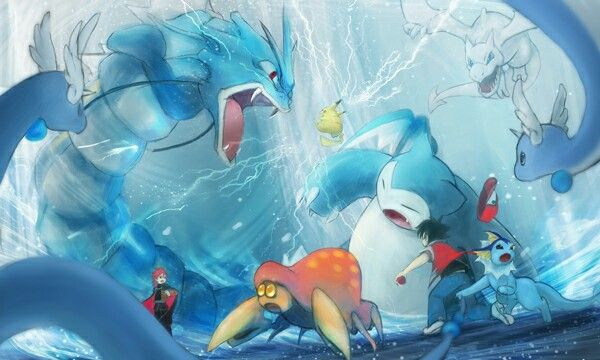
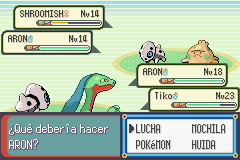

Los combates Pokémon son enfrentamientos entre entrenadores donde cada uno utiliza a sus Pokémon para luchar.
Los Pokémon utilizan movimientos para atacar, defenderse o aplicar estrategias, y el objetivo es debilitar
a los Pokémon del oponente mientras proteges a los tuyos.

Tipos de Combates
Existen diferentes tipos de combates en los juegos y en la serie:
Combate individual: Un Pokémon contra otro.
Combate doble: Dos Pokémon de cada lado luchan al mismo tiempo.
Combate rotatorio: Los entrenadores pueden rotar sus Pokémon en medio del combate.
Combates competitivos: Partidas entre jugadores siguiendo reglas oficiales.

Estrategias Básicas
Para ganar un combate, es importante considerar lo siguiente:
Conocer los tipos: Cada tipo de Pokémon tiene fortalezas y debilidades (por ejemplo, el tipo Agua vence al tipo Fuego).
Utilizar movimientos efectivos: Elige ataques que sean súper efectivos contra el rival.
Planificar los cambios: Cambia de Pokémon en el momento adecuado para contrarrestar al enemigo.
Objetos: Usa objetos como pociones o bayas para fortalecer a tus Pokémon.